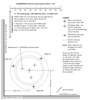

T1Locating ring (P10) · check template 1:1 VERIFIED
Template T1 · rev 2026-10-23
units: mm; tape stations also in cm
numbers: manual/facts.json + data.json, source_commit: HEAD of https://github.com/scotthowson/desk-setup on 23 Oct 2026 (supersedes a2e99ea with measured facts)
!PRINT AT 100% / ACTUAL SIZE
DISABLE FIT TO PAGE / shrink to fit / scale to fit. Measure the ruler before use: 0 to 100 must read 100.0 mm and the cross-check bar 50.0 mm (±0.5). If either is off, do not use the sheet: reprint.
CHECK SHEET (chapter G, step 2a). With the top lifted off and before drilling any ring, lay this sheet on each bare ALEX corner: the pencil trace of the pad must lie inside the ⌀52 circle all round. If not, move the cabinet and re-trace. It is a drilling template only for the optional ALEX feet, on the bottom corners.

The ring is fitted turned: its own holes may sit at any angle. ALEX top panel 15.9 mm (5/8 in), measured 23 Oct 2026: the #6 × 5/8 in screws go 13.4 mm in and leave 2.5 mm.